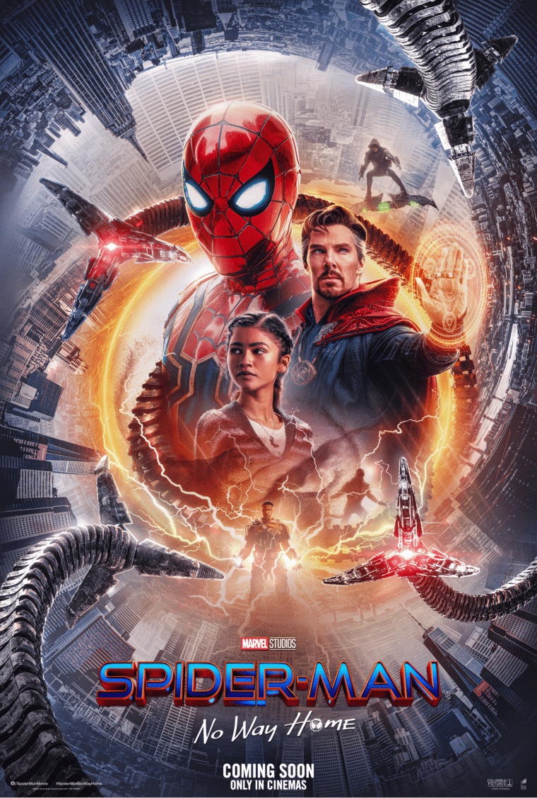

Meus filmes favoritos
Uma seleção de filmes que eu gosto e recomendo.
Homem-Aranha: Sem Volta Pra Casa

ABC Bolinhas · Perfil de integrante
Alguns dos filmes que eu mais curto assistir.
Uma seleção de filmes que eu gosto e recomendo.
